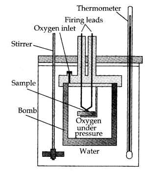

There are 33 questions in this question paper with internal choice.
SECTION A consists of 16 multiple-choice questions carrying 1 mark each.
SECTION B consists of 5 short answer questions carrying 2 marks each.
SECTION C consists of 7 short answer questions carrying 3 marks each.
SECTION D consists of 2 case-based questions carrying 4 marks each.
SECTION E consists of 3 long answer questions carrying 5 marks each.
All questions are compulsory.
Use of log tables and calculators is not allowed.
SECTION - A
The number of atoms present in one mole of an element is equal to Avogadro’s number. Which of the
following elements contains the greatest number of atoms?
4 g He
46 g Na
0.40 g Ca
12 g He
The quantum number which determines the size and energy of the orbital is:
Azimuthal quantum number
Spin orbital quantum number
Principal quantum number
Magnetic orbital quantum number
Which of the following statements is not correct about the characteristics of cathode rays?
They start from the cathode and move towards the anode.
They travel in straight lines in the absence of an external electrical or magnetic field.
Characteristics of cathode rays do not depend upon the material of electrodes in the cathode ray
tube.
Characteristics of cathode rays depend upon the nature of gas present in the cathode ray tube.
The electronic configuration of dysprosium (atomic number 66) is:
[Xe]4f144d96s2
[Xe]4f105d46s2
[Xe]6s24f14
[Xe]4f106s2
Thermodynamics is not concerned about:
energy changes involved in a chemical reaction.
the extent to which a chemical reaction proceeds.
the rate at which a reaction proceeds.
the feasibility of a chemical reaction.
Which of the following statements is correct?
The presence of reacting species in a covered beaker is an example of an open system.
There is an exchange of energy as well as matter between the system and the surroundings in a
closed system.
The presence of reactants in a closed vessel made up of copper is an example of a closed system.
The presence of reactants in a thermos flask or any other closed insulated vessel is an example
of a closed system.
During complete combustion of one mole of butane, 2658 kJ of heat is released. The thermochemical
reaction for the above change is:
The volume of gas is reduced to half from its original volume. The specific heat will be:
reduced to half
be doubled
remain constant
increase four times
Which of the following is not an example of a redox reaction?
CuO + H2 → Cu + H2O
2K + F2 → 2KF
Fe2O3 + 3CO → 2Fe + 3CO2
PbCl2 + H2SO4 → PbSO4 + 2HCl
E° values of some redox couples are given below. On the basis of these values, choose the correct
option.
E° values:
Br2/Br− = +1.90
Ag+/Ag(s) = +0.80
Cu 2+/Cu(s) = + 0.34
I2I- = + 0.54
(A) Cu will reduce br-
(B) Cu will reduce Ag
(C) Cu will reduce I-
(D) Cu will reduce Br2
Thiosulphate reacts differently with iodine and bromine in the reactions given below:
2S2O32− + I2 → S4O62−
+ 2I− S2O32− + Br2 + 5H2O →
2SO42− + 2Br− + 10H+ Which of the following statements justifies the above dual behaviour of thiosulphate?
Iodine is a stronger oxidant than bromine.
Bromine is a weaker oxidant than iodine.
Thiosulphate undergoes oxidation by bromine and reduction by iodine in these reactions.
Bromine undergoes oxidation and iodine undergoes reduction in these reactions.
The addition of HCl to an alkene proceeds in two steps. The first step is the attack of H−
ion to >C=C< portion which can be shown as:
All of these are possible
Given below are two statements labelled as Assertion (A) and Reason (R):
Assertion (A): Isotopes of a given element show the same type of chemical
behaviour.
Reason (R): The chemical properties of an atom are controlled by the number of
electrons in the atom.
Select the most appropriate answer from the options given below:
Both A and R are true and R is the correct explanation of A.
Both A and R are true but R is not the correct explanation of A.
A is true but R is false.
A is false but R is true.
Given below are two statements labelled as Assertion (A) and Reason (R):
Assertion (A): Among halogens, fluorine is the best oxidant.
Reason (R): Fluorine has the most electronegative atom.
Select the most appropriate answer from the options given below:
Both A and R are true and R is the correct explanation of A.
Both A and R are true but R is not the correct explanation of A.
A is true but R is false.
A is false but R is true.
Given below are two statements labelled as Assertion (A) and Reason (R):
Assertion (A): Nitration of benzene with nitric acid requires the use of
concentrated sulphuric acid.
Reason (R): The mixture of concentrated sulphuric acid and concentrated nitric acid
produces the electrophile, NO2+.
Select the most appropriate answer from the options given below:
Both A and R are true and R is the correct explanation of A.
Both A and R are true but R is not the correct explanation of A.
A is true but R is false.
A is false but R is true.
Given below are two statements labelled as Assertion (A) and Reason (R):
Assertion (A): 1-Butene on reaction with HBr in the presence of a peroxide produces
1-bromo-butane.
Reason (R): It involves the free radical mechanism.
Select the most appropriate answer from the options given below:
Both A and R are true and R is the correct explanation of A.
Both A and R are true but R is not the correct explanation of A.
A is true but R is false.
A is false but R is true.
SECTION - B
Calculate the number of moles in the following masses:
(a) 7.85 g of Fe
(b) 7.9 mg of Ca
The combination of atoms to form molecules is based on the octet rule.
Give two limitations of this rule.
Two elements, X and Y, have atomic numbers 36 and 58 respectively, on the basis of electronic
configuration, predict the following:
The group, period, and block to which each element belongs.
Are they representative elements?
What does the following diagram indicate?
What is it used for?
Show that for an isothermal expansion of an ideal gas:
(i) ΔU = 0 (ii) ΔH = 0

what is the mesomeric effect?
OR
Explain the position mesomeric effect with the help of the aniline example.
Here is the complete solution to your questions, formatted and ready for print, The questions
are prganized with their respective parts:
SECTION - B
Two particles A and B have wavelength 1Å = 5×10⁻¹⁰ m × 10⁻¹⁰ m and 1B = 10×10⁻¹⁰ m.
Find the frequency, wave number, and energies for particle A.
Determine the frequency, wave number, and energies for particle B.
Which has more penetrating power and why?
(a) Using the VSEPR theory, identify the type of hybridization and draw the structure of OF₃. What are
the oxidation states of O and F?
(b) MgCl₂ is linear, but SnCl₂ is angular. Why?
In the following pairs, which species has a larger size? Explain.
(a) K or K⁺
(b) Br or Br⁻
20 g of CaCO₃ and 20 g of H₂SO₄ react to give CaSO₄ along with water and CO₂.
(a) How much CaSO₄ will be formed?
(b) If 1 mole of gas occupies 22.4 L at STP then calculate the volume of CO₂ evolved in the above
reaction.
above reaction.
[Ca = 40, C = 12, O = 16, H = 1, S = 32]
(a) The solubility of silver chloride (AgCl) in water at 25°C is 1.08×10⁻⁵ mol L⁻¹. Calculate the
solubility product of AgCl at this temperature.
(b) The molar solubility of lead iodate is 4.0×10⁻⁵ mol/L at 25°C. Calculate the solubility product
of lead iodate at this temperature.
(c) Write the Ksp expression for Al(OH)₃.
Write the resonating structures of SO₃, NO₃, and Ozone.
OR
Calculate the oxidation number of phosphorus in the following species:
(a) H₄P₂O₇
(b) PO₄³⁻
Draw the Newman’s projection of the ethane molecule. Rotation around carbon-carbon single bonds in
ethane is not completely free. Justify the statement.
SECTION - D
Read the following passage and answer the following questions:
James Maxwell (1870) suggested that when electrically charged particle moves under acceleration,
alternating electrical and magnetic fields are produced and transmitted. These fields are transmitted in
the form of waves called electromagnetic waves or electromagnetic radiation. These waves do not require
any medium for their propagat ion and can move in vacuum. The increasing order of wavelength of these
radiations is given as below:
Cosmic rays < γ - rays < X - rays < Ultraviolet light < Visible light < Infrared rays < Micro waves <
Radio waves.
(a) What is the relation between wavelength, wave number, frequency and velocity?
(b) The three dimensional structure of any orbital is given by which Quantum number?
(c) The radio 93.5 FM, broadcasts on a frequency of 1,370 kHz (kilo hertz). What will be the
wavelength of the radiation?
Read the following passage and answer the following questions:
Chemical synthesis is a dynamic process. Even after the equilibrium state is reached, the forward and
reverse reactions do not cease. At equilibrium, the rates of the reactions remain constant, and the
relative concentrations of reactants and products are maintained. The parameters and characteristics of
a system at equilibrium are listed below.
The reaction must be reversible and carried out in a closed system. The process of equilibrium is
dynamic. Equal forward and reverse rates must be there. The ratio of reactants to products is not
required. However, the quantities of reactants and products will always remain constant until
equilibrium has been reached, so that there is no longer any change in the concentrations of reactants
and products. Therefore, chemical equilibrium will exist between the reactants and products.
(a) Mention any two important characteristics of equilibrium.
(b) How would you tell the difference between a system that is reacting so slowly that concentration
changes are not apparent and one that has reached chemical equilibrium?
(c) What do the relative concentrations of reactants vs the products in a particular equilibrium
reaction tell us about the effect of differing values for K?
(i) When K = 0.96/s
(ii) When K = 1.67/s
Are reactants or products preferred at equilibrium?
OR
PCl₅, PCl₃ and Cl₂ are at equilibrium at 500K and having concentration 1.59 M PCl₃, 1.59 M Cl₂ and 1.41
M PCl₅.
Calculate Kc for the reaction:
PCl₅ ⇌ PCl₃ + Cl₂
SECTION - E
Attempt any five of the following:
(a) Dipole moment of hydrogen halides decreases from HF to HI. Why?
(b) What is the covalency of NH₃, NH₄⁺ and [BF₄⁻]?
(c) Which of the following compounds does not show resonance: CO, CO₃²⁻, CO₂?
(d) Discuss the shape of the following molecules based on VSEPR theory: BCl₃, SiH₄, SiCl₄
(e) Name the types of simga and pi bonds in
HCO NHCH3
O
||
H-C-NH-CH3
(f) Which hybrid orbitals are used by underlined carbon in the following molecules?
CH₃ — CHO
CH₃ — CH = CH₂
(g) Explain on the basis of molecular orbital diagram why O₂ should be paramagnetic?
(a) Explain the chemistry for the fusion of organic compound with Na metal for the detection of
nitrogen.
(b) In an estimation of sulphur by carius method, 0.540 g of an organic compound gave 0.999 g of BaSO₄.
Find the percentage of sulphur in the compound.
(Atomic mass of Ba = 137 u, S = 32 u)
OR
(c) Draw the resonance structure of aniline, using curved arrow for electronic movements.
(d) Differentiate between the principle of estimation of nitrogen in an organic compound by:
(i) Dumas method
(ii) Kjeldahl’s method
An alkyl halide C₅H₁₁Br (A) reacts with ethanolic KOH to give an alkene ‘B’, which reacts with Br₂ to
give a compound ‘C’, which on dehydrobromination gives an alkyne ‘D’. On treatment with sodium metal in
liquid ammonia one mole of ‘D’ gives one mole of sodium salt of ‘D’ and half a mole of hydrogen gas.
Complete hydrogenation of ‘D’ yields a straight chain alkane. Identify A, B, C and D. Give the reactions
involved.
OR
(a) What do you understand by the following:
(i) Markovnikov’s rule
(ii) Huckel’s rule
(b) An unsaturated hydrocarbon A’ adds two molecules of H₂ and on reductive ozonolysis gives
butane-1,4-dial, ethanol and propanone.
(i) Give the structure of A’.
(ii) Write its IUPAC name
(iii) Explain the reactions involved.